기계설계산업기사 (2014-03-02 기출문제)
1과목: 기계가공법 및 안전관리
1. 기어가 회전운동을 할 때 접촉하는 것과 같은 상대운동으로 기어를 절삭하는 방법은?
- 창성식 기어 절삭법
- 모형식 기어 절삭법
- 원판식 기어 절삭법
- 성형공구 기어 절삭법
(정답률: 85%)

2. 공기 마이크로메타를 그 원리에 따라 분류할 때 이에 속하지 않는 것은?
- 유량식
- 배압식
- 광학식
- 유속식
(정답률: 79%)
3. 고속가공의 특성에 대한 설명이 옳지 않은 것은?
- 황삭부터 정삭까지 한 변의 셋업으로 가공이 가능하다.
- 열처리된 소재는 가공할 수 없다.
- 칩(Chip)에 열이 집중되어, 가공물은 절삭열 영향이 적다.
- 절삭저항이 감소하고, 공구수명이 길어진다.
(정답률: 66%)
4. 연삭액의 구비조건으로 틀린 것은?
- 거품 발생이 많을 것
- 냉각성이 우수할 것
- 인체에 해가 없을 것
- 화학적으로 안정될 것
(정답률: 92%)
5. 밀링머신에서 단식분할법을 사용하여 원주를 5등분하려면 분할크랭크를 몇 회전씩 돌려가면서 가공하면 되는가?
- 4
- 8
- 9
- 16
(정답률: 69%)
6. 길이가 짧고 지름이 큰 공작물을 절삭하는데 사용되는 선반으로 면판을 구비하고 있는 것은?
- 수직선반
- 정면선반
- 탁상선반
- 터릿선반
(정답률: 74%)
7. 주측대의 위치를 정밀하게 하기 위하여 나사식 측정장치, 다이얼게이지, 광학적 측정장치를 갖추고 있는 보링머신?
- 수직 보링머신
- 보통 보링머신
- 지그 보링머신
- 코어 보링머신
(정답률: 66%)
8. 서멧(Cermet)공구를 제작하는 가장 적합한 방법은?
- WC(텅스텐 탄화물)을 Co로 소결
- Fe에 Co를 가한 소결초경 합금
- 주성분이 W, Cr, Co, Fe로 된 주로 합금
- Al2O3 분말에 TIC분말을 혼합 소결
(정답률: 62%)
9. 센터리스 연삭작업의 특징이 아닌 것은?
- 센터구멍이 필요 없는 원통 연삭에 편리하다.
- 연속작업을 할 수 있어 대량생산에 적합하다.
- 대형 중량물도 연삭이 용이하다.
- 가늘고 긴 가공물을 연삭에 적합하다.
(정답률: 73%)
10. 측정기, 피측정물, 자연 환경 등 측정자가 파악할 수 없는 변화에 의하여 발생하는 오차는?
- 사차
- 우연오차
- 계통오차
- 후퇴오차
(정답률: 86%)
11. 절삭공구의 구비조건으로 틀린 것은?
- 고온 경도가 높아야 한다.
- 내마모성이 좋아야 한다.
- 마찰계수가 적어야 한다.
- 충격을 받으면 파괴되어야 한다.
(정답률: 90%)
12. 기계 작업시 안전 사항으로 가장 거리가 먼 것은?
- 기계 위에 공구나 재료를 올려 놓는다.
- 선반 작업시 보호안경을 착용한다.
- 사용전 기계ㆍ기구를 점검한다.
- 절삭공구는 기계를 정지시키고 교환한다.
(정답률: 91%)
13. 기어 피치원의 지름이 150mm, 모듈(module)이 5인 표준형 기어의 잇수는? (단, 비틀림각은 30°이다.)
- 15개
- 30개
- 45개
- 50개
(정답률: 86%)
14. 선반에서 가공할 수 있는 작업이 아닌 것은?
- 기어절삭
- 테이퍼절삭
- 보링
- 총형절삭
(정답률: 55%)
15. 초음파 가공에 주로 사용하는 연삭입자의 재질이 아닌 것은?
- 산화알루미나계
- 다이아몬드 분말
- 탄화규소계
- 고무분말계
(정답률: 64%)
16. 일반적으로 각도 측정에 사용되는 것이 아닌 것은?
- 컴비네이션 세트
- 나이프 에지
- 광학식 클리노미터
- 오토 콜리메이터
(정답률: 70%)
17. 마이크로미터 측정면의 평면도 검사에 가장 적합한 측정기기는?
- 옵티컬 플랫
- 공구 현미경
- 광학식 클리노미터
- 투영기
(정답률: 74%)
18. 해머 작업의 안전수칙에 대한 설명으로 틀린 것은?
- 해머의 타격면이 넓어진 것을 골라서 사용한다.
- 장갑이나 기름이 묻은 손으로 자루를 잡지 않는다.
- 담금질된 재료는 함부로 두드리지 않는다.
- 쐐기를 박아서 해머의 머리가 빠지지 않는 것을 사용한다.
(정답률: 81%)
19. 선반의 심압대가 갖추어야 할 조건으로 틀린 것은?
- 베드의 안내면을 따라 이동할 수 있어야 한다.
- 센터는 편위시킬 수 있어야 한다.
- 베드의 임의의 위치에서 고정할 수 있어야 한다.
- 심압축은 중공으로 되어 있으며 끝부분은 내셔널테이퍼로 되어 있어야 한다.
(정답률: 72%)
20. 밀링머신에 관한 설명으로 옳지 않는 것은?
- 테이블의 이송속도는 밀링커터 날 1개당 이송거리×커터의 날 수×커터의 회전수로 산출한다.
- 플레노형 밀링머신은 대형의 공작물 또는 중량물의 평면이나 홈 가공에 사용한다.
- 하향절삭은 커터의 날이 일감의 이송방향과 같으므로 일감의 고정이 간편하고 뒤틈 제거장치가 필요 없다.
- 수직 밀링머신은 스핀들이 수직방향으로 장치되며 엔드밀로 홈 깍기, 옆면 깍기 등을 가공하는 기계이다.
(정답률: 81%)
2과목: 기계제도
21. 나사의 표시가 “L 2줄 M50×3-6H”로 나타났을 때 이 나사에 대한 설명으로 틀린 것은?
- 나사의 감김 방향이 왼쪽이다.
- 수나사 등급이 6H이다.
- 미터나사이고, 피치는 3mm이다.
- 2줄나사이다.
(정답률: 74%)
22. 다음 기하공차 주위에서 자세 공차를 나타내는 것은?
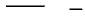
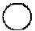
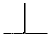
(정답률: 82%)
23. 베어링의 호칭번호가 6026일 때 이 베어링의 안지름은 몇 mm인가?
- 6
- 60
- 26
- 130
(정답률: 84%)
24. 다음 입체도의 정면도(화살표 방향)로 적합한 것은?
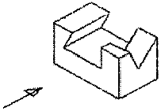
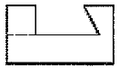
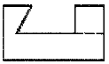
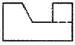
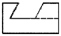
(정답률: 88%)
25. 그림과 같은 등각투상도에서 화살표 방향이 정면일 때 우측면도로 가장 적합한 것은?
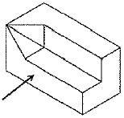
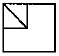
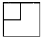
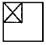
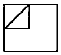
(정답률: 90%)
26. 구름베어링의 안지름 번호에 대하여 베어링의 안지름 치수를 잘못 나타낸 것은?
- 안지름번호:01-안지름:12mm
- 안지름번호:02-안지름:15mm
- 안지름번호:03-안지름:18mm
- 안지름번호:04-안지름:20mm
(정답률: 87%)
27. 부등변 ㄱ형강의 기호 표시가 올바르게 된 것은? (단, A와 B는 형강의 높이와 폭이고, t는 두께, L은 형강의 길이이다.)
- L A×B×t-L
- L A×B×t×L
- L A-B-t×L
- L A-B-t-L
(정답률: 86%)
28. 다음 KS 재료 기호 중 니켈크로뮴 몰리브데넘강에 속하는 것은?
- SMn 420
- SCr 415
- SNCM 420
- SFCM 590S
(정답률: 86%)
29. 그림과 같이 제3각법으로 투상한 도면에서 ? 부분의 평면도로 가장 적합한 것은?
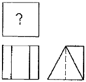
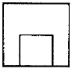
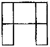
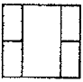
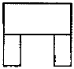
(정답률: 67%)
30. 그림과 같이 표시된 기호에서 Ⓜ은 무엇을 나타내는가?
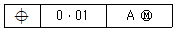
- A의 원통 정도를 나타낸다.
- 기계 가공을 나타낸다.
- 최대 실체 공차 방식을 나타낸다.
- A의 위치를 나타낸다.
(정답률: 76%)
31. 원의 반지름을 나타내고자 할 때 치수선을 가장 옳게 나타낸 것은?
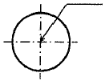
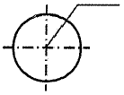
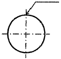
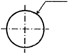
(정답률: 75%)
32. 나사 표기가 TM18이라 되어 있을 때 이는 무슨 나사인가?
- 관용 평행나사
- 29° 사다리꼴나사
- 관용 테이퍼나사
- 30° 사다리꼴나사
(정답률: 61%)
33. 기계제도에서 특수한 가공을 하는 부분(범위)을 나타내고자 할 때 사용하는 선은?
- 굵은 실선
- 가는 1점 쇄선
- 가는 실선
- 굵은 1점 쇄선
(정답률: 67%)
34. 다음 ()안에 공통으로 들어갈 내용은?
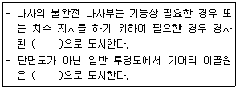
- 가는 실선
- 가는 파선
- 가는 1점 쇄선
- 가는 2점 쇄선
(정답률: 80%)
35. 다음 용접기호에 대한 설명으로 틀린 것은?
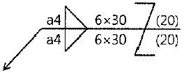
- 지그재그 필릿 용접이다.
- 목두께는 4mm이다.
- 한쪽면의 용접부 개소는 30개이다.
- 인접한 용접부 간격은 20mm이다.
(정답률: 72%)
36. 그림과 같은 도면에서 참고 치수를 나타내는 것은?
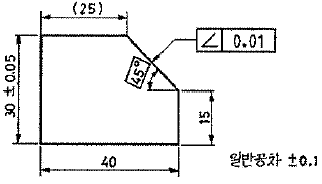
- (25)
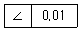
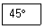
- 일반공차 ±0.1
(정답률: 87%)
37. 그림과 같은 도면에서 “가” 부분에 들어갈 가장 적절한 기하공차 기호는?
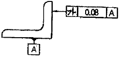
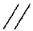
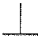
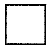
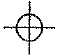
(정답률: 88%)
38. 래핑 다듬질 면 등에 나타나는 줄무늬로서 가공에 의한 카터의 줄무늬가 여러 방향으로 교차 또는 무방향일 때 줄무늬 방향 기호는?
- R
- C
- X
- M
(정답률: 79%)
39. ø100e7인 축에서 치수공차가 0.035이고, 위치수 허용차가 -0.072라면 최소허용치수는 얼마인가?
- 99.893
- 99.928
- 99.965
- 100.035
(정답률: 66%)
40. 그림과 같은 입체도에서 화살표 방향이 정면일 때 평면도로 가장 적합한 것은?
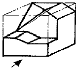
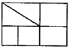
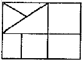
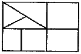
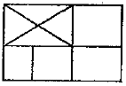
(정답률: 47%)
3과목: 기계설계 및 기계재료
41. 다음 구조용 복합재료 중에서 섬유강화 금속은?
- FRTP
- SPF
- FRM
- FRP
(정답률: 84%)
42. 금속의 냉각속도가 빠르면 조직은 어떻게 되는가?
- 조직이 치밀해진다.
- 조직이 거칠어진다.
- 불순물이 적어진다.
- 냉각속도와 조직은 아무 관계가 없다.
(정답률: 72%)
43. 특수강에서 합금원소의 주요한 역할이 아닌 것은?
- 기계적, 물리적 화학적 성질의 개선
- 황 등의 해로운 원소 제거
- 소성 가공성의 감소
- 오스테나이트 입자 조정
(정답률: 59%)
44. 형상기억합금인 니티놀(nitinol)의 성분은?
- Cu-Zn
- Ti-Ni
- Ni-Cr
- Al-Cu
(정답률: 82%)
45. 일정한 온도 영역과 변형속도 영역에서 유리질처럼 늘어나며, 이때 강도가 낮고, 연성이 크므로 작은 힘으로 복잡한 형상의 성형이 가능한 기능성 재료는?
- 형상기억 합금
- 초소성 합금
- 초탄성 합금
- 초인성 합금
(정답률: 63%)
46. 아연을 5~20% 첨가한 것으로 금색에 가까워 금박 대용으로 사용하며 특히 화폐, 메달 등에 주로 사용되는 황동은?
- 톰백
- 실루민
- 문쯔메탈
- 고속도강
(정답률: 77%)
47. 인청동에서 인(P)의 영향이 아닌 것은?(오류 신고가 접수된 문제입니다. 반드시 정답과 해설을 확인하시기 바랍니다.)
- 쇳물의 유동을 좋게 한다.
- 강도와 인성을 증가시킨다.
- 탄성을 나쁘게 한다.
- 내식성을 증가시킨다.
(정답률: 67%)
48. 4% Cu, 2% Ni, 1.5% Mg이 함유된 Al 합금으로서 내열성이 크고, 기계적 성질이 우수하여 실린더 헤드나 피스톤 등에 적합한 합금은?
- 실루민
- Y-합금
- 로엑스
- 두랄루민
(정답률: 70%)
49. 다음 중 합금강을 제조하는 목적으로 적당하지 않은 것은?
- 내식성을 증대시키기 위하여
- 단접 및 용접성 향상을 위하여
- 결정입자의 크기를 성장시키기 위하여
- 고온에서의 기계적 성질 저하를 방지하기 위하여
(정답률: 71%)
50. 다음 중 구리의 특성에 대한 설명으로 틀린 것은?
- 전기 및 열의 전도성이 우수하다.
- 전연성이 좋아 가공이 용이하다.
- 화학적 저항력이 작아 부식이 잘 된다.
- 아름다운 광택과 귀금속적 성질이 우수하다.
(정답률: 73%)
51. 지름이 4cm의 봉재에 인장하중이 1000N이 작용할 때 발생하는 인장응력은 약 얼마인가?
- 127.3N/cm2
- 127.3N/mm2
- 80N/cm2
- 80N/mm2
(정답률: 62%)
52. 10kN의 축하중이 작용하는 볼트에서 볼트 재료의 허용인장응력이 60MPa 일 때 축하중을 견디기 위한 볼트의 최소 골지름은 약 몇 mm인가?
- 14.6
- 18.4
- 22.5
- 25.7
(정답률: 37%)
53. 속도비 3:1 모듈 3, 피니언(작은 기어)의 잇수 30인 한 쌍의 표준 스퍼 기어의 축간 거리는 몇 mm인가?
- 60
- 100
- 140
- 180
(정답률: 48%)
54. 400rpm으로 전등축을 지지하고 있는 미끄럼 베어링에서 저널의 지름은 6cm, 저널의 길이는 10cm이고, 4.2kN의 레이디얼 하중이 작용할 때, 베어링 압력은 약 몇 MPa인가?(오류 신고가 접수된 문제입니다. 반드시 정답과 해설을 확인하시기 바랍니다.)
- 0.5
- 0.6
- 0.7
- 0.8
(정답률: 42%)
55. 어느 브레이크에서 제동동력이 3kW이고, 브레이크 용량(brake capacity)을 0.8N/mm2ㆍm/s라고 할 때 브레이크 마찰면적의 크기는 약 몇 mm2인가?
- 3200
- 2250
- 5500
- 3750
(정답률: 41%)
56. 허용전단응력 60N/mm2의 리벳이 있다. 이 리벳에 15kN의 전단하중을 작용시킬 때 리벳의 지름은 약 몇 mm이상이어야 안전한가?
- 17.85
- 20.50
- 25.25
- 30.85
(정답률: 37%)
57. 고무 스프링의 일반적인 특징에 관한 설명으로 틀린 것은?
- 1개의 고무로 2축 또는 3축 방향의 하중에 대한 흡수가 가능하다.
- 형상을 자유롭게 할 수 있고, 다양한 용도가 가능하다.
- 방진 및 방음 효과가 우수하다.
- 특히 인장하중에 대한 방진효과가 우수하다.
(정답률: 53%)
58. 다음 중 유연성 커플링(flexible coupling)이 아닌 것은?
- 기어 커플링
- 셀러 N/mm2
- 롤러 체인 N/mm2
- 벨로즈 N/mm2
(정답률: 46%)
59. 평벨트 전동장치와 비교하여 V-벨트 전동장치에 대한 설명으로 옳지 않은 것은?
- 접촉 면적이 넓으므로 비교적 큰 동력을 전달한다.
- 장력이 커서 베어링에 걸리는 하중이 큰 편이다.
- 미끄럼이 작고 속도비가 크다.
- 바로걸기로만 사용이 가능하다.
(정답률: 58%)
60. 볼트 이음이나 리벳 이음 등과 비교하여 용접 이음의 일반적인 장점이나 틀린 것은?
- 잔류응력이 거의 발생하지 않는다.
- 기밀 및 수밀성이 양호하다.
- 공정수를 줄일 수 있고, 제작비가 싼 편이다.
- 전체적인 제품 중량을 적게 할 수 있다.
(정답률: 70%)
4과목: 컴퓨터응용설계
61. CAD 시스템에서 곡선을 표시하는데 3차식을 사용하는 이유로 가장 적당한 것은?
- 곡면을 생성할 때 고차식에 비해 시간이 적게 걸린다.
- 4차로는 부드러운 곡선을 표현할 수 없기 때문이다.
- CAD 시스템은 3차를 초과하는 차수의 곡선방정식을 지원할 수 없다.
- 3차식이 아니면 곡선의 연속성이 보장되지 않는다.
(정답률: 68%)
62. CAD(Computer-aided Design) 소프트웨어의 가장 기본적인 역할은?
- 기하 형상의 정의
- 해석결과의 가시화
- 유한요소 모델링
- 설계물의 최적화
(정답률: 76%)
63. 3차원 형상을 표현하는데 있어서 사용하는 Z-buffer 방법은 무엇을 의미하는가?
- 음영을 나타내기 위한 방법
- 은선 또는 은면을 제거하기 위한 방법
- View-port에 모델을 나타내기 위한 방법
- 두 곡면을 부드럽게 연결하기 위한 방법
(정답률: 70%)
64. 다음 중 Bezier 곡선에 관한 특징으로 잘못된 것은?
- 곡선을 국부적으로 수정하기 용이하다.
- 생성되는 곡선은 다각형의 시작점과 끝점을 통과한다.
- 곡선은 주어진 조정점들에 의해 만들어지는 블록껍질(convex hull) 내부에 존재한다.
- 다각형 꼭지점의 순서를 거꾸로 하여 곡선을 생성해도 동일한 곡선이 생성된다.
(정답률: 66%)
65. 분산처리형 CAD 시스템이 갖추어야 할 기본 성능에 해당하지 않는 것은?
- 사용자 별로 단일 프로세서를 사용하거나 혹은 정보통신망으로 각자의 시스템별로 상호간에 연결되어 중앙에서 제어받는 것과 같은 방식으로도 사용할 수 있어야 한다.
- 어떤 시스템에서 작성된 자료나 프로그램을 다른 사용자가 사용하고자 할 때 언제라도 해당 자료를 사용하거나 보내줄 수 있어야 한다.
- 자료를 정합성을 담보하기 위해 일부 시스템에 고장이 발생하면, 다른 시스템에서도 자료의 이동 및 교환을 막아야 한다.
- 분산처리 시스템의 주 시스템과 부 시스템에서 각각 별도의 자료 처리 및 계산 작업이 이루어질 수 있어야 한다.
(정답률: 74%)
66. 다음 중 4개의 꼭지점을 선형 보간하여 생성하는 곡면은?
- 선형 곡면(bilnear surface)
- 쿤스 패치(Coon's patch)
- 허밋 패치(Hermite patch)
- F-패치(Ferguson's
(정답률: 38%)
67. 브라운관에서 전자빔이 pannel의 제 위치에 도착하도록 3색의 전자빔을 선별해주는 역할을 하는 부품은?
- SCAN BOARD
- FRAME PLATE
- SHADOW MASK
- FRAME BUFFER
(정답률: 62%)
68. 공간의 한 물체가 세계 좌표계의 x축에 평행하면서 세계좌표 (0, 2, 4)를 통과하는 축에 관하여 90° 회전된다. 그 물체의 한 점이 모델 좌표 (0, 1, 1)을 가지는 경우, 회전 후에 같은 점의 세계 좌표를 구하는 식으로 적절한 것은?(오류 신고가 접수된 문제입니다. 반드시 정답과 해설을 확인하시기 바랍니다.)
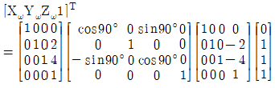
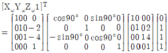
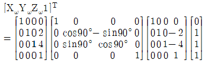
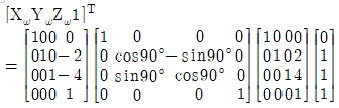
(정답률: 45%)
69. 유한요소법에 의한 공학해석에 사용하기 가장 적절한 모델링은?
- 솔리드 모델링
- 와이어프레임 모델링
- 입체 모델링
- 서피스 모델링
(정답률: 76%)
70. 모든 유형의 곡선(직선, 스플라인, 원호 등) 사이를 경사지게 자른 코너를 말하는 것으로 각진 모서리나 꼭지점을 경사 있게 깍아 내리는 작업은?
- Hatch
- Fillet
- Rounding
- Chamfer
(정답률: 77%)
71. 다음 2차원 데이터 변환행렬은 어떠한 변환을 나타내는가? (단, Sx는 1보다 크다.)
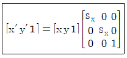
- 이동(translation) 변환
- 스케일링(scaltion) 변환
- 반사(reflection) 변환
- 회전(rotation) 변환
(정답률: 59%)
72. 일반적으로 컴퓨터의 주기억장치로 사용되는 것은?
- 자기테이프
- ROM
- USB 메모리
- 플로피 디스크
(정답률: 81%)
73. 다음 중 “어떤 위치의 모서리에 대하여 A 크기의 모떼기를 해라”라 와 같은 명령을 사용하여 모델링을 수행하는 형상모델링 방법으로 적절한 것은?
- 와이어프레임 모델링
- 특징형상 모델링
- 경계 모델링
- 스위핑 모델링
(정답률: 77%)
74. 솔리드 모델링에서 표면을 몇 개의 분할 가능한 부분으로 나누고 각각의 표면의 결합구조에 의해서 입체를 표현하는 방식은?
- CSG 방식
- CYLINOER 방식
- FEM 방식
- B-REP 방식
(정답률: 44%)
75. 서피스 모델링에서 할 수 없는 작업은?
- 면을 모델링한 후 공구이송경로를 정의
- 두 면의 교차선이나 단면도를 구함
- 모델링한 후 은선의 제거
- 무게, 체적, 모멘트의 계산
(정답률: 75%)
76. 2차원 평면에서 원(circle)을 정의하고자 할 때 필요한 조건으로 틀린 것은?
- 중심점과 원주상의 한 점으로 정의
- 원주상의 3개의 점으로 정의
- 두 개의 접선으로 정의
- 중심점과 하나의 접선으로 정의
(정답률: 70%)
77. CAD 시스템을 활용하는 방식에 따라 3가지로 구분한다고 할 때 이에 해당하지 않는 것은?
- 중앙통제형 시스템(host based system)
- 분산처리형 시스템(distributed based system)
- 연결형 시스템(connected system)
- 독립형 시스템(stand alone system)
(정답률: 63%)
78. 주어진 물체를 윈도우에 디스플레이할 때 윈도우 내에 포함되는 부분만을 추출하기 위하여 사용되는 2차원 절단 코헨-서더랜드 알고리즘은 윈도우를 포함한 2차원 평면을 9개의 영역으로 구분하여 각 영역을 비트 스트링(bit string)으로 표현한다. 모든 영역을 최소의 수로 비트로 표현하기 위하여 이 알고리즘에서 사용되느니 코드의 길이는?
- 3-비트
- 4-비트
- 5-비트
- 6-비트
(정답률: 66%)
79. 3차원 직교좌표계 상의 세 점 A(1, 1, 1), B(2, 1, 4), C(5, 1, 3)가 이루는 삼각형의 면적은 얼마인가?
- 4
- 5
- 8
- 10
(정답률: 48%)
80. CAD 시스템 간에 상호 데이터를 교환할 수 있는 표준이 아닌 것은?
- DWG
- IGES
- DXF
- STEP
(정답률: 74%)